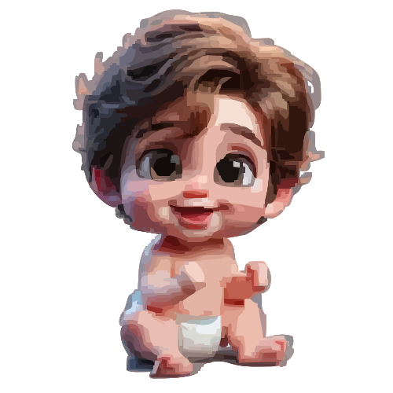

Born in Jilakaragudam (2003)
1st Class – Bhudda School in Jilakaragudam
5th Class – Police School in Kakinada
ACHIEVED: Basic Computer Course
10th Class – Sri Techno Chaitanya in Eluru
Intermediate – Aditya Institution (MPC)
ACHIEVED: Drawing & GK Prizes
B-TECH – Ramachandra College of Engineering
ACHIEVED: AI, HTML, CSS, JavaScript, Python, Paper Presentation, Drawing, Essay Writing